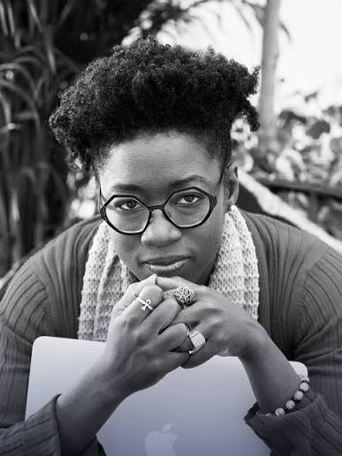

Our Tech Heroes
Sam's Tech Hero: Joy Buolamwini
Founder of the Algorithmic Justice League

Who Is Joy Buolamwini?
Joy Buolamwini is a computer scientist, researcher, and founder of the Algorithmic Justice League. Her work focuses on identifying and challenging bias in artificial intelligence and other automated technologies.
Challenging Bias in Technology
While conducting research at MIT, Buolamwini encountered facial analysis technology that had difficulty detecting her face. This experience led her to investigate how well facial analysis systems performed across different skin tones and genders. Her research demonstrated major differences in accuracy, with darker-skinned women experiencing particularly high error rates.

Why We Chose Her
We chose Joy Buolamwini as our Tech Hero because her work demonstrates that technology is not automatically neutral. By exposing racial and gender disparities in artificial intelligence, she has pushed researchers and technology companies to think more carefully about fairness, representation, and accountability when developing new technologies.
Learn More
Joel's Tech Hero: Tope Awotona
Founder and CEO of Calendly

Who Is Tope Awotona?
Tope Awotona is a Nigerian-born entrepreneur and the founder of Calendly, a platform that makes scheduling meetings easier. He grew up in Lagos, Nigeria, before moving to the United States. In 2013, he founded Calendly after becoming frustrated with how difficult it was to schedule meetings with others.
Breaking Barriers in Technology
Awotona invested his own savings into Calendly and worked to build the company into a successful technology business. His story is important because Black founders are underrepresented in the technology industry. As a Black immigrant entrepreneur, his background also brings attention to how race and immigration experiences can intersect with opportunities in business and technology.
Why We Chose Him
We chose Tope Awotona as Joel's Tech Hero because his story shows how people from different backgrounds can make an impact in the technology industry. He identified a common problem and created a tool that millions of people now use. His success also shows the importance of representation and creating more opportunities for people who are underrepresented in technology.
Learn More
Jesse's Tech Hero: Kimberly Bryant
Founder of Black Girls CODE

Who Is Kimberly Bryant?
Kimberly Bryant is an engineer and the founder of Black Girls CODE, an organization she started in 2011 to help girls of color learn computer programming and technology skills. She wanted to create more opportunities for young girls who were underrepresented in the technology industry.
Connection to Intersectionality
Bryant's work connects to intersectionality because Black girls can face barriers related to both their race and gender. These challenges can overlap and make it harder for them to find opportunities in technology. Through Black Girls CODE, Bryant has worked to make coding education more accessible and encourage greater representation in the technology industry.
Why We Chose Her
We chose Kimberly Bryant as Jesse's Tech Hero because she recognized that not everyone has the same opportunities to succeed in technology. Instead of just talking about the lack of diversity in the industry, she created a program to help address it. Her work shows why representation and equal access are important when thinking about the future of technology.